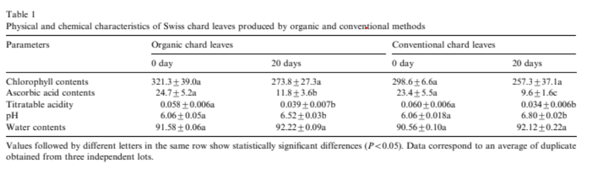
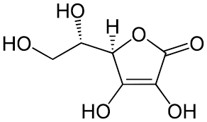

He buscat informacio primaria académica a Google acadèmic
Hem trobat un article cientific que compara la composició química del Swiss i os posaré un article:
Els cultius ecològics, al no utilitzar pesticides i fertilitzants sintètics, sovint tenen una exposició més gran a estressos ambientals (plagues, condicions climàtiques, etc.), cosa que fa que les plantes desenvolupin més compostos defensius com polifenols i flavonoides. Aquests compostos, en molts casos, tenen propietats antioxidants. Estudis científics han demostrat que molts productes ecològics tenen concentracions més altes d'aquests compostos antioxidants en comparació amb els seus equivalents convencionals. Tot i així, la variabilitat entre cultius específics i condicions de creixement pot influir en els resultats finals.
Al gràfic superior es pot veure que no hi han diferencies entre la Bleda ecológica i Bleda convensional pel que fa l'àcid ascòrbic o vitamina C però sembla que es destrueix una mica més pasats 20 dies si no es ecológic
La vitamina C és un nutrient essencial que actua com a antioxidant, ajuda en la producció de col·lagen i reforça el sistema immunològic. També millora l'absorció de ferro i afavoreix la cicatrització de ferides. Com que és hidrosoluble, cal consumir-la en la nostre dieta normal.
